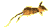
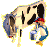
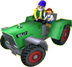

|
This is Alex's farm. He's your new friend and he can't wait to take
you with him on his adventures around the farm!
You'll
be amazed by Alex's farm, but before you explore this fantastic world
you have to construct
all the buildings. You'll find a whole
world of new discoveries !
There's
no end of funny
surprises in the
house or in the
barn; you just have to find them!
| You'll
also meet a host of characters - some are kind, some are rather
unusual - from grandfather
who'll teach you how to milk
the cows to the
scarecrow who needs you to chase away the birds, and hundreds
of others too - you'll have lots of exciting encounters on the farm!
|

|
 |
Life
on the farm is never boring! Each member of your family is very
busy and if you lend them a hand, they'll be sure to reward you.
Does
Grandma need any vegetables to make her yummy soup? |
| Ask
Dad
if you can drive
the tractor - he'll let you if you are good! Next it's
off to work in the field; ploughing and sowing the earth. You can
also knock down buildings and then rebuild them! |
 |
But
life on the farm is more than hard work all day! There are lots of games
to play; try fishing
in the pond, catching
the hens when they escape from the henhouse, weave
your way through the wheat field with the scarecrow to chase away the
crows and more !...
After
all these activities you'll know everything there is to know about life
on the farm! You will have earned your
super
farmer's certificate !

|